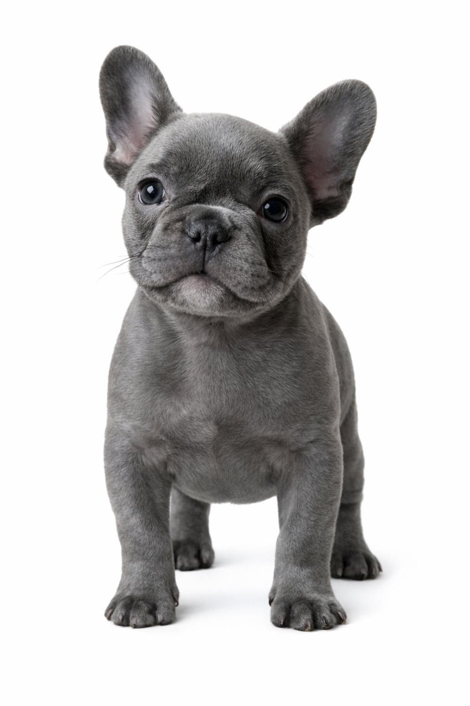

Барт (французький бульдог)
Барт — видатний представник породи французький бульдог, відомий своєю м'язистою статурою, богатирським сном та надзвичайно харизматичним, хоч і впертим, характером. Станом на поточний час він є об'єктом уваги завдяки своєму вмінню майстерно ігнорувати команди, якщо немає смачної мотивації, та унікальним вокальним здібностям під час сну. Справжній маленький танк. Живе у м. Києві.
Опис та зовнішній вигляд
Барт відрізняється міцною, кремезною статурою, що повністю відповідає стандартам породи. Незважаючи на компактні розміри, він володіє значною масою і силою, що робить його схожим на маленького бодібілдера. Його фірмові вуха "кажан" завжди стоять сторчма, вловлюючи найменший шурхіт упаковки з їжею на кухні.
Головною естетичною особливістю Барта є його шерсть. Колір шерстяного покриву офіційно класифікується як блакитний (сірий із красивим відливом) , що надає йому дуже стильного та сучасного вигляду.
Вокалізація: феномен хропіння та сопіння
Будучи брахіцефальною (короткомордою) породою, Барт має дуже специфічний набір звуків. Замість звичайного гавкоту, дім наповнений глибоким сопінням, зітханнями та найголовнішим — хропінням.
Хропіння Барта може змагатися з працюючим двигуном невеликого трактора. Це показник того, що собака знаходиться в стані найвищого дзену на своєму улюбленому дивані.
Типове хропіння Барта на дивані.
- Під час міцного сну на спині — 100% випадків
- Коли щось інтенсивно винюхує на вулиці — 80%
- Коли вимагає шматочок сосиски (важке сопіння) — 95%
- Коли його намагаються розбудити вранці — 100%
Здібності та команди
Барт чудово розуміє всі команди, але виконує їх виключно після ретельного аналізу: "А що мені за це буде?". Якщо в руці немає смаколика, виконання команди може бути перенесене на невизначений термін.
- Дай лапу — виконує найчастіше, бо це вимагає найменше рухів тіла.
- Сидіти — сідає важко, з гучним зітханням, показуючи, яку велику послугу робить.
- "Захист" дивану — команда, яку він придумав сам і виконує бездоганно 24/7.

Барт — майстер спорту зі сну
| Порода | Французький бульдог |
|---|---|
| Вид | Собака свійський |
| Вік | 3 роки |
| Колір шерсті | Блакитний |
| Особливості | Гучно хропе |
| Навички | Ігнорування команд без їжі |
| Статус | Диванний король |
Характер та темперамент
Барт — це собака з великою гідністю. Він не буде бігати за м'ячиком 50 разів поспіль. Він принесе його один раз, подивиться на вас із виразом "я виконав твій каприз, тепер дай мені спокій", і піде спати. Проте він надзвичайно відданий і любить бути поруч із людьми (особливо, коли вони їдять).
🎭 Генератор настрою Барта
Налаштуйте параметри і дізнайтеся, яким буде Барт зараз!
Улюблені речі та хобі
Барт має радар на будь-які м'ясні вироби. Він може спати непробудним сном, але якщо десь в радіусі 10 метрів впаде шматочок сосиски, Барт телепортується туди швидше, ніж ви встигнете моргнути.
Він може спати в будь-якій позі: на спині, розкинувши лапи, звисаючи з дивану наполовину. Його хропіння — це колискова для всієї родини.
Щелепи Барта здатні розгризти звичайну іграшку за 3 хвилини. Тому він визнає лише спеціальні "незнищенні" гумові кістки та канати для перетягування.
Гра: Барт ловить сосиски
| Порода | Французький бульдог |
|---|---|
| Вік | 3 роки |
| Колір шерсті | Блакитний |
| Статус | Диванний король |
🎯 Вікторина: Наскільки добре ти знаєш Барта?
Питання 1 з 6: Що Барт любить робити найбільше?
Питання 2 з 6: Яка порода у Барта?
Питання 3 з 6: Якого кольору його шерсть?
Питання 4 з 6: Який звук Барт видає уві сні?
Питання 5 з 6: Скільки років Барту?
Питання 6 з 6: Що Барт робить, якщо йому дають команду без смаколика?
🃏 Гра на пам'ять: Знайди пари
| Порода | Французький бульдог |
|---|---|
| Вік | 3 роки |
| Колір шерсті | Блакитний |
📖 Довідка: Французький Бульдог
Попри назву, порода має глибокі англійські корені, проте свій сучасний вигляд зі знаменитими вухами "кажан" отримала саме у Франції.
| Характеристика | Стандарт породи | Барт |
|---|---|---|
| Статура | Компактна, мускулиста | Маленький бодібілдер ✔ |
| Активність | Помірна | Мінімальна (береже енергію) |
| Апетит | Хороший | Бездонний ✔✔✔ |
| Вокалізація | Рідко гавкають, часто сопуть | Чемпіон з хропіння 🚜 |
🎨 Намалюй Барта
Намалюй портрет свого улюбленого блакитного бульдога. Не забудь про великі вуха кажана!
💬 Що думає Барт прямо зараз?
🐾 Симулятор прогулянки з Бульдогом
Французькі бульдоги — собаки з характером. Перевір, чи зможеш ти вмовити його погуляти!